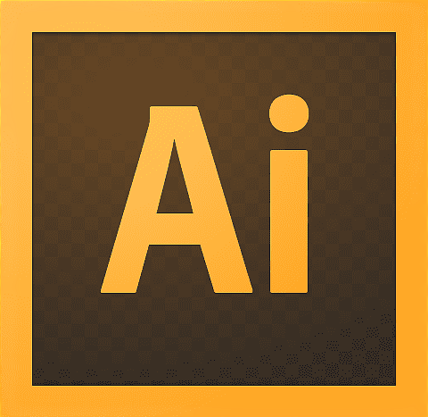

Resume
Jul 2022 - Apr 2023
Senior UI/UX Designer
24/7 Teach
New York, NY (Remote)
- Work in all aspects of design and development, and redesign of the company website.
- Lead the UX design team working on the company's design sprint projects.
- Assisted the team leader and offered design solutions that effectively solved problems and enhanced advertising goals to ensure the organization's productivity.
- Lead the junior UI/UX design teams to get familiar with the design process as a profession.
Jan 2022 - Jun 2022
Product Designer(Capstone)
UW School of Nursing
Seattle, WA
- Developed a fully-interactive, high-fidelity prototype of a digital shareable platform for daily documentation purposes.
- Conducted user research, interviews and surveys, to understand needs and requirements to start the design process.
- Collected and analyzed data from the research and provided school nurses with a design solution.
- Collected user feedback and redesigned the prototype to further improve user experience.
Feb 2021 - Aug 2022
Front-end Designer
Pétience
Remote
- Worked with the front-end team to conduct user research and develop a mobile app for local pet services for both new and experienced pet parents.
- Created and redesigned prototypes and designs according to product goals and intended function.
- Collaborated with designers to understand product specifics, and worked to ensure a proper development process.
Professional Skillset
- UI Design
- Web / Mobile Design
- Product Design
- Quantitative / Qualitative Research
- Wireframing / Prototyping
- Interaction Design
Tools


Programming Languages
- HTML / CSS
- JavaScript
- Java
- Python
- R
- React
Education
2023 - Present
Universtiy of Michigan
Master's Degree
Ann Arbor, MI
Program:
Master of Science in Information
Relevant Coursework:
Web Development, Programming, Interaction Design, Privacy, Accessibility, AR/VR Development
2018 - 2022
Universtiy of Washington
Bachelor's Degree
Seattle, WA
Major:
Human-Centered Design & Engineering
3.67/4.00
Relevant Coursework:
User-Centered Design, Visual Communication, Interactive System Design, Ethnographic Research, Research in HCI, Front-end Developing, Usability Testing, Human-Data Interaction
2014 - 2018
Faith Lutheran High School
High School Diploma
Las Vegas, NV